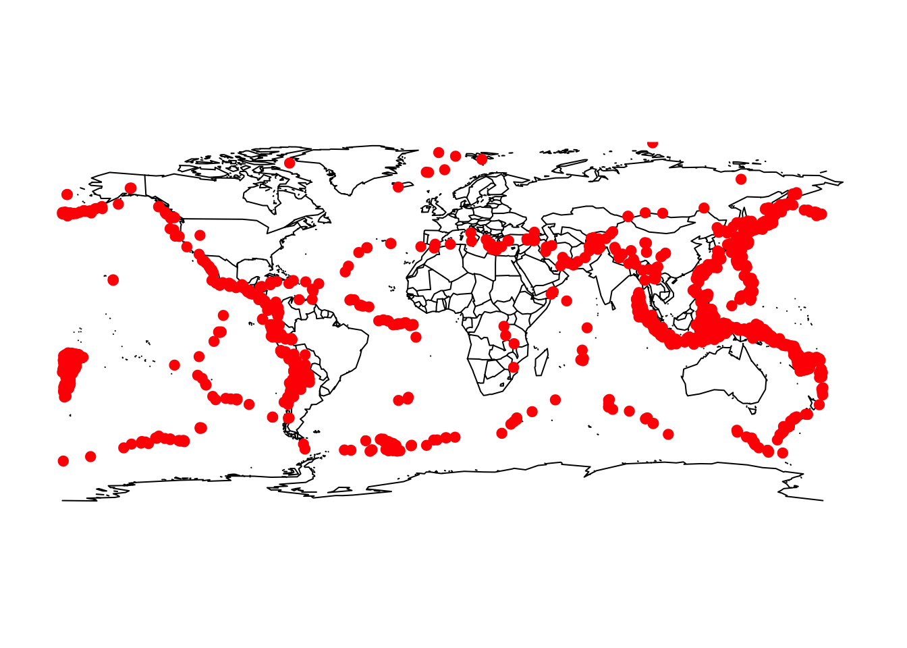

Chapter 12 Regular Expressions
With basic string-manipulation functions, we saw how to do things like split up entries in a data file which are separated by commas.
## [[1]]
## [1] "One Fish" " Two Fish" " Red Fish" " Blue Fish"or by single spaces
## [[1]]
## [1] "One" "Fish," "Two" "Fish," "Red" "Fish," "Blue" "Fish"or even a comma followed by a space
## [[1]]
## [1] "One Fish" "Two Fish" "Red Fish" "Blue Fish"But we don’t know how to deal with situations like splitting on a comma, optionally followed by some number of spaces.
Not only is it annoying to have such a simple thing defeat us, it’s an instance of a much broader class of problems. If we’re trying to extract data from webpages, we may want to get rid of all the formatting instructions buried in the source of the webpage. We might want to extract all the personal names from a document which are preceded by titles (such as Mr., Ms., Miss, Dr.), without knowing what those names are, or how long they are. And so forth.
We need a language for telling R about patterns of strings. The most basic such language is that of regular expressions. Regular expressions are used to match sets of strings. Start with string constants, and build up by allowing “this and then that”, “either this or that”, “repeat this”, etc. These rules get expressed in a grammar, with special symbols.
Every regular expression is a sequence of symbols, which specifies a set of text strings that follow some pattern that — match the regular expression. - Regular expressions are strings and therefore a regexp can be stored in a character variable. This means that regexps can be built up and changed using string-manipulating functions. A valid regular expression must conform to certain rules of grammar; it gets interpreted by the computer as rules for matching certain strings, but not others.
Every string is a valid regexp. We say “regexp” as short hand for the phrase a “regular expression as used in R”. fly matches end of “fruitfly”, “why walk when you can fly” but it does not match “time flies like an arrow; fruit flies like a banana; a banana flies poorly”.
fly_phrases = c("fruitfly",
"why walk when you can fly",
"time flies like an arrow; fruit flies like a banana; a banana flies poorly",
"superman flew")
# Returns which elements have the term "fly"
grep("fly", fly_phrases, value = T)## [1] "fruitfly" "why walk when you can fly"If we did wish to match one regexp OR another regexp we cold use the “|” symbol. This symbol is used in the same way it was in section 1.4
## [1] "fruitfly"
## [2] "why walk when you can fly"
## [3] "time flies like an arrow; fruit flies like a banana; a banana flies poorly"## [1] "fruitfly"
## [2] "why walk when you can fly"
## [3] "time flies like an arrow; fruit flies like a banana; a banana flies poorly"# Returns which elements have "fly flies" or "time" or "flies"
grep("time|fruit fly|flies", fly_phrases, value = T)## [1] "time flies like an arrow; fruit flies like a banana; a banana flies poorly"Parentheses are used to create groups.
text_colors = c("Some people say grey",
"others say gray,",
"and both are greatly used")
# Searches for the same thing
grep("gr(e|a)y", text_colors, value = T)## [1] "Some people say grey" "others say gray,"## [1] "Some people say grey" "others say gray,"12.1 Ranges, Escaping
A character class is a list of characters enclosed between [ and ] which matches any single character in that list. We use these braces in regular expressions to indicate character ranges. For example the regexp [0123456789] matches any single digit.
text = c("1 Fish", "2 Fish", "red fish", "blue fish")
# Any numbers?
grep("[0123456789]", text, value = T)## [1] "1 Fish" "2 Fish"If the first character of the list is the caret ^, then it matches any character not in the list. For example, [^abc] matches anything except the characters a, b or c.
## [1] "1 Fish" "2 Fish" "red fish" "blue fish"Another example: t[aeiou] matches any two-character sequence in which “t” is followed by a lowercase vowel.
text_baseball = c("Ohhhhh",
"take me out",
"to the ball game")
# Match any two-character sequence in which “t” is followed by a lowercase vowel.
grep("t[aeiou]",text_baseball, value = T)## [1] "take me out" "to the ball game"This system of using ranges is used a lot, and there are certain named classes of characters are predefined, below are some of them.
[:lower:]: Lower-case letters, equivalent to[a-z][:upper:]: Upper-case letters, equivalent to[A-Z][:alpha:]: Alphabetic characters:[:lower:]and[:upper:].[:digit:]: Digits: 0 1 2 3 4 5 6 7 8 9, equivalent to[0-9]\d: digit, equivalent to[:digit:]\D: Non-digit[:alnum:]: Alphanumeric characters:[:alpha:]and[:digit:].[:blank:]: Blank characters: space and tab, and possibly other locale-dependent characters such as non-breaking space.[:punct:]: Punctuation characters: ! " # $ % & ’ ( ) * + , - . / : ; < = > ? @ [ ] ^ _ ` { | } ~.[:graph:]: Graphical characters:[:alnum:]and[:punct:].[:space:]: Space characters: tab, newline, vertical tab, form feed, carriage return, space and possibly other locale-dependent characters.\s: space\S: not space\w: word characters, equivalent to[[:alnum:]_]or[A-z0-9].\W: not word, equivalent to[^A-z0-9_].
## [1] "1 Fish" "2 Fish"## [1] "1 Fish" "2 Fish"## [1] "1 Fish" "2 Fish" "red fish" "blue fish"12.2 Metacharacters
The fundamental building blocks are the regular expressions that match a single character. Most characters, including all letters and digits, are regular expressions that match themselves. However, we also use some of these characters to mean different things in order to match more intricate patterns. The characters reserved for special meanings (and not simply as characters to match) are called metacharacters. Any metacharacter with special meaning may be quoted by preceding it with a backslash. The metacharacters in extended regular expressions are . | ( ) [ { ^ $ * + ?.
We already saw | and [] in action above. Now lets talk about the . symbol. This symbol matches any single character. To match strings that have a “.” we need to use a backslash.
text = c("There was a monster",
"Superman flew over there.",
"He made it in time.",
"Yumm, pancakes!",
"MMmm Mmmm they were good...")
# Looks for every character
grep(".", text, value = T)## [1] "There was a monster" "Superman flew over there."
## [3] "He made it in time." "Yumm, pancakes!"
## [5] "MMmm Mmmm they were good..."## [1] "Superman flew over there." "He made it in time."
## [3] "MMmm Mmmm they were good..."12.3 Quantifiers
Here is a list of some of the metacharacters and some of their features. These are all quantifiers and they control how many times the regexp should be matched. The following features all are considered repetition quantifiers.
+: The preceding item will be matched one or more times.*: The preceding item will be matched zero or more times.?: The preceding item is optional and will be matched at most once.{n}: The preceding item is matched exactly “n” times.{n,}: The preceding item is matched “n” or more times.{n,m}: The preceding item is matched at least “n” times, but not more than “m” times.
## [1] "There was a monster" "Superman flew over there."
## [3] "He made it in time." "Yumm, pancakes!"
## [5] "MMmm Mmmm they were good..."## [1] "There was a monster" "Superman flew over there."
## [3] "He made it in time." "Yumm, pancakes!"
## [5] "MMmm Mmmm they were good..."If we want to match a regexp exactly {n}, {n,} or {n,m} times then it looks for this sequence consecutively. For example, the following command does not output “He made it in time.”, despite this phrase having two “m”s in it.
## [1] "Yumm, pancakes!" "MMmm Mmmm they were good..."# Another example
text = c("3, 2, 1, GO!",
"On the count of 3,",
"Count to 100",
"Wish upon 1 star.")
# Detect exactly two digits in a row.
grep("[[:digit:]]{2}", text, value = T)## [1] "Count to 100"By default, quantifiers are “greedy” and they match as many repetitions as they can. Following a quantifier by ? makes it match as few as possible.
# Only look for one digit then stop.
# It doesn't matter if there is more.
grep("[[:digit:]]?", text, value = T)## [1] "3, 2, 1, GO!" "On the count of 3," "Count to 100"
## [4] "Wish upon 1 star."12.4 Anchoring
Anchoring is used to find regexps at specific locations in a string. For example, at the beginning or end of a word, or at the beginning or end of a phrase.
$means a pattern can only match at the end of a line or string^means (outside of braces) the beginning of a line or string<and>anchor to beginning or ending of words\banchors boundary (beginning or ending) of words,\Banywhere else
## [1] "On the count of 3,"# matches capital letters not at the beginning or ending of a word
grep("\\B[A-Z]", text, value = T)## [1] "3, 2, 1, GO!"## [1] "Count to 100"## [1] "3, 2, 1, GO!"## [1] "Wish upon 1 star."## [1] "On the count of 3," "Count to 100"12.5 Splitting on a Regexp
We can use regexps in many R functions, we are not limited to just grep() and grepl. For example, strsplit() will take a regexp as its split argument. This means we can make splits a string into new strings at each instance of the regexp, just like it would if split were a string.
# Load data:
al2 = readLines("http://www.stat.cmu.edu/~cshalizi/statcomp/14/lectures/04/al2.txt")
al2 = paste(al2, collapse=" ")
# Split words by space
al2.words1 = strsplit(al2, split=" ")
# Lets see what this looks like
head(sort(table(al2.words1)))## al2.words1
## - "the "Woe absorbs accept achieve
## 1 1 1 1 1 1# Split words by space or by a punctuation symbol
al2.words2 = strsplit(al2, split="(\\s|[[:punct:]])+")[[1]]
head(sort(table(al2.words2)))## al2.words2
## absorbs accept achieve against agents aid
## 1 1 1 1 1 1Closer examination shows there’s still a problem: “men’s” \(\rightarrow\) “men”, “s”. To handle possessives: look for any number of white spaces, or at least one punctuation mark followed by at least one space
al2.words3 = strsplit(al2, split="\\s+|([[:punct:]]+[[:space:]]+)")[[1]]
head(sort(table(al2.words3)))## al2.words3
## "the "Woe absorbs accept achieve
## 1 1 1 1 1 112.6 An Example
grep() scans a character vector for matches to a regexp
returns either indices of matches, or matching strings
grep(x, pattern, value)Example: scanning data files
ANSS.csv.html catalogs earthquakes of magnitude 6+, 1/1/2002–1/1/2012
<HTML><HEAD><TITLE>NCEDC_Search_Results</TITLE></HEAD><BODY>Your search parameters are:<ul>
<li>catalog=ANSS
<li>start_time=2002/01/01,00:00:00
<li>end_time=2012/01/01,00:00:00
<li>minimum_magnitude=6.0
<li>maximum_magnitude=10
<li>event_type=E
</ul>
<PRE>
DateTime,Latitude,Longitude,Depth,Magnitude,MagType,NbStations,Gap,Distance,RMS,Source,EventID
2002/01/01 10:39:06.82,-55.2140,-129.0000,10.00,6.00,Mw,78,,,1.07,NEI,2002010140Now we work on extracting just the data, not the search parameters and so forth. Notice that every line of data begins with a date, YYYY/MM/DD. We can use this to find just the part of the data that we want.
anss = readLines("http://www.stat.cmu.edu/~cshalizi/statcomp/14/lectures/05/ANSS.csv.html", warn=FALSE)
initial_date = "^[0-9]{4}/[0-9]{2}/[0-9]{2}"
head(grep(x=anss,pattern=initial_date,value=TRUE))## [1] "2002/01/01 10:39:06.82,-55.2140,-129.0000,10.00,6.00,Mw,78,,,1.07,NEI,2002010140"
## [2] "2002/01/01 11:29:22.73,6.3030,125.6500,138.10,6.30,Mw,236,,,0.90,NEI,2002010140"
## [3] "2002/01/02 14:50:33.49,-17.9830,178.7440,665.80,6.20,Mw,215,,,1.08,NEI,2002010240"
## [4] "2002/01/02 17:22:48.76,-17.6000,167.8560,21.00,7.20,Mw,427,,,0.90,NEI,2002010240"
## [5] "2002/01/03 07:05:27.67,36.0880,70.6870,129.30,6.20,Mw,431,,,0.87,NEI,2002010340"
## [6] "2002/01/03 10:17:36.30,-17.6640,168.0040,10.00,6.60,Mw,386,,,1.14,NEI,2002010340"We can also use the invert option to find the non-matches.
## [1] "<HTML><HEAD><TITLE>NCEDC_Search_Results</TITLE></HEAD><BODY>Your search parameters are:<ul>"
## [2] "<li>catalog=ANSS"
## [3] "<li>start_time=2002/01/01,00:00:00"
## [4] "<li>end_time=2012/01/01,00:00:00"
## [5] "<li>minimum_magnitude=6.0"
## [6] "<li>maximum_magnitude=10"
## [7] "<li>event_type=E"
## [8] "</ul>"
## [9] "<PRE>"
## [10] "DateTime,Latitude,Longitude,Depth,Magnitude,MagType,NbStations,Gap,Distance,RMS,Source,EventID"
## [11] "</PRE>"
## [12] "</BODY></HTML>"12.6.1 Match Locations and Substrings
When you just want a Boolean vector saying where the matches are use grepl().
## [1] FALSE FALSE FALSE FALSE FALSE FALSE FALSE FALSE FALSE FALSE TRUE TRUE
## [13] TRUE TRUE TRUE TRUE TRUE TRUE TRUE TRUEWe can also consider the function regexpr() which returns location of first match in the target string, plus attributes like length of matching substring. The function gregexpr() is similar, but it returns a list of this for all matches. A location of -1 means no match, and neither returns the text of the match
x = c("A and B",
"A, B and C",
"A, B, C and D",
"foobar")
pattern = "[[:space:]]*(,|and)[[:space:]]"
# Match data from regexpr()
regexpr(pattern, x)## [1] 2 2 2 -1
## attr(,"match.length")
## [1] 5 2 2 -1
## attr(,"index.type")
## [1] "chars"
## attr(,"useBytes")
## [1] TRUE## [[1]]
## [1] 2
## attr(,"match.length")
## [1] 5
## attr(,"index.type")
## [1] "chars"
## attr(,"useBytes")
## [1] TRUE
##
## [[2]]
## [1] 2 5
## attr(,"match.length")
## [1] 2 5
## attr(,"index.type")
## [1] "chars"
## attr(,"useBytes")
## [1] TRUE
##
## [[3]]
## [1] 2 5 8
## attr(,"match.length")
## [1] 2 2 5
## attr(,"index.type")
## [1] "chars"
## attr(,"useBytes")
## [1] TRUE
##
## [[4]]
## [1] -1
## attr(,"match.length")
## [1] -1
## attr(,"index.type")
## [1] "chars"
## attr(,"useBytes")
## [1] TRUETo getting the matching text we can use regmatches() which takes the output of regexpr() or gregexpr() and a string, and returns the matching strings.
x = c("A and B",
"A, B and C",
"A, B, C and D",
"foobar")
pattern = "[[:space:]]*(,|and)[[:space:]]"
## Match data from regexpr()
m = regexpr(pattern, x)
regmatches(x, m)## [1] " and " ", " ", "## [[1]]
## [1] "A" "B"
##
## [[2]]
## [1] "A" "B and C"
##
## [[3]]
## [1] "A" "B, C and D"
##
## [[4]]
## [1] "foobar"## [[1]]
## [1] " and "
##
## [[2]]
## [1] ", " " and "
##
## [[3]]
## [1] ", " ", " " and "
##
## [[4]]
## character(0)## [[1]]
## [1] "A" "B"
##
## [[2]]
## [1] "A" "B" "C"
##
## [[3]]
## [1] "A" "B" "C" "D"
##
## [[4]]
## [1] "foobar"Why separate regexpr() from regmatches? This lets us do things like count the number or length of matches with less work. It also lets us see what text in one file corresponds to matching locations in another file.
Get the (latitude, longitude) pair for each earthquake.
one_geo_coord = paste("-?[0-9]+\\.[0-9]{4}")
pair_geo_coords = paste(rep(one_geo_coord,2),collapse=",")
have_coords = grepl(x=anss,pattern=pair_geo_coords)
coord.matches = gregexpr(pattern=pair_geo_coords,text=anss[have_coords])
coords = regmatches(x=anss[have_coords],m=coord.matches)
head(coords)## [[1]]
## [1] "-55.2140,-129.0000"
##
## [[2]]
## [1] "6.3030,125.6500"
##
## [[3]]
## [1] "-17.9830,178.7440"
##
## [[4]]
## [1] "-17.6000,167.8560"
##
## [[5]]
## [1] "36.0880,70.6870"
##
## [[6]]
## [1] "-17.6640,168.0040"## [[1]]
## [1] 24
## attr(,"match.length")
## [1] 18
## attr(,"index.type")
## [1] "chars"
## attr(,"useBytes")
## [1] TRUEcoords =unlist(coords) # De-list-ify to vector
coord.pairs = strsplit(coords,",") # Break apart latitude and longitude
coord.df = do.call(rbind, coord.pairs) # De-list-ify to array
coord.df = apply(coord.df,2,as.numeric) # Character to numeric
coord.df = as.data.frame(coord.df)
colnames(coord.df) = c("Latitude","Longitude")
head(coord.df)## Latitude Longitude
## 1 -55.214 -129.000
## 2 6.303 125.650
## 3 -17.983 178.744
## 4 -17.600 167.856
## 5 36.088 70.687
## 6 -17.664 168.004
12.6.2 Replacements
Assigning to regmatches() changes the matched string, just like substr()
sub() and gsub() work like regexpr() and gregexpr(), but with an extra replace argument
sub() produces a new string, assigning to regmatches() modifies the original one
Really, assigning to regmatches() creates a new string, destroys the old one, and assigns the new string the old name.